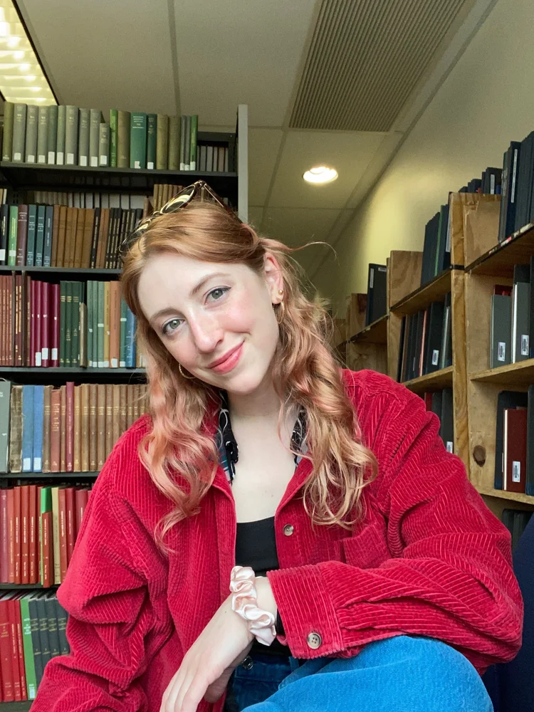

Find the writing voice that's authentically yours.
We help students from middle school through college admissions cut through the noise and write with clarity and confidence — from personal statements to creative fiction and everything in between.
We are writers, teachers, and essay coaches with thirty years of tutoring experience between us. We make students feel comfortable in the writing process and deliver results, from middle-school writing through college admissions and beyond. Our students have been admitted to Penn, Columbia, Stanford, NYU, and many others.
The people behind the pen
Two working writers and educators, each bringing a distinct set of specialties to every session.
Jake Goldwasser
Teacher · Writer · New Yorker CartoonistA Columbia grad, Jake holds MFAs from the Iowa Writers' Workshop and the Iowa Translation Workshop. He has taught at the high-school and college levels (Hunter, Horace Mann, University of Iowa); led SAT-prep classes; and received fellowships from Fulbright, UNESCO, and Poetry Society of America. His work has appeared in the New England Review and other top literary magazines.
Jake loves to share his passion for crafting a personal narrative and helping students achieve their potential with a coaching style that is low-stress, positive, and effective. He works with students of all abilities to minimize anxiety so they can focus on strategies for mastering content. He works best with students who are motivated and curious.

Abby Melick
Writer · Writing Professor at ColumbiaAbby received her BA in English and Theater at Princeton and her MFA in Creative Writing and Translation from Columbia. Her writing and translations have appeared in the Yale Review and have been nominated for the Pushcart Prize, shortlisted for the Masters Review anthology, and selected as the winner of the Gulf Coast Translation Prize. A play she devised, The Grown-Ups, was published by Concord Theatricals and is now performed across the country.
Abby has more than a decade of experience tutoring verbal skills, college admission essay writing, and testing strategies in New York. She is a compassionate and patient tutor with a special ability to get through to kids — those who struggle and high-performers alike.
Coaching that grows with the student
From a first personal statement to a lifelong writing practice.
College Essay
From personal statements to supplemental essays and beyond, our sessions help students get to the core of what makes them unique. We guide applicants through a process of writing exercises to understand themselves as students and as people. We are not college consultants; we are creative writers who specialize in building confident writers.
Essay coaching isn't just a key in the door for college admission — it's a skill-building process that stays with students throughout their academic and professional careers. With our help, students cut through the AI-generated noise and find a writing voice that is authentically theirs.
Creative Writing & Workshops
Whether you're looking to bolster a college application or explore your creative side, we offer creative writing services to find your creative spark and stand out from the crowd.
Abby handles fiction and playwriting. Jake does poetry. (We share creative nonfiction and literary translation.) We give you the graduate-level workshop experience, cutting through literary clichés so your voice sparkles with freshness and insight. We've worked with elementary-school students all the way through retirees exploring their life stories through writing — and everyone in between.
Student Support
We have taught English, creative writing, ESL, and more, with experience at Khan Academy (the College Board's official SAT-prep partner) and New York City's top private and public schools. We are Swiss Army knives when it comes to academics, whether your student needs academic enrichment, executive-functioning help, or school support.
We bring nuance and empathy to every student's process. We know school can be anxiety-inducing, and we make sure mental health is a top priority. Send us a note to discuss your student's particular needs.
Send us a note to set up a free consultation
Tell us a bit about your student and what you're working on. We'll follow up to schedule a free introductory call — no obligation.